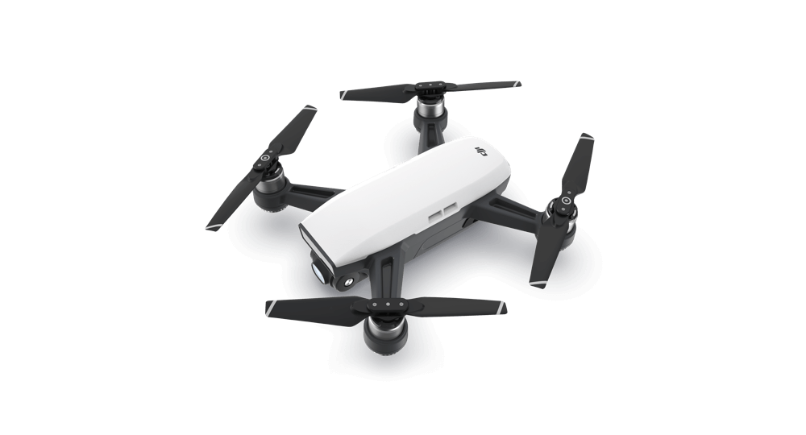

Spesifikasi DJI Phantom 4
Ferb 12,2018View : 5.834.212Featuring Obstacle Avoidance, ActiveTrack, higher speeds and longer flight times, the Phantom 4 redefines the flying camera..
Watch Now
Spesifikasi DJI Mavic Pro
Ferb 12,2018View : 5.834.212The DJI Mavic Pro is a small yet powerful drone that turns the sky into your creative canvas easily and without worry, helping you make every moment an aerial.
Watch Now

Spesifikasi Dji Spark
Ferb 12,2018View : 5.834.212Meet Spark, a mini drone that features all of DJI's signature technologies, allowing you to seize the moment whenever you feel inspired. With intelligent flight control options, a mechanical gimbal, and a camera with incredible image quality, Spark empowers you to push your creative boundaries.
Watch Now